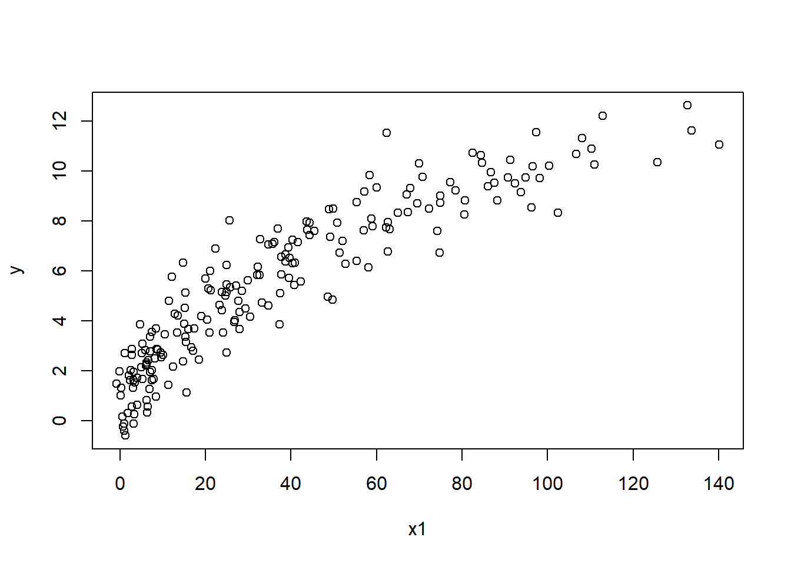
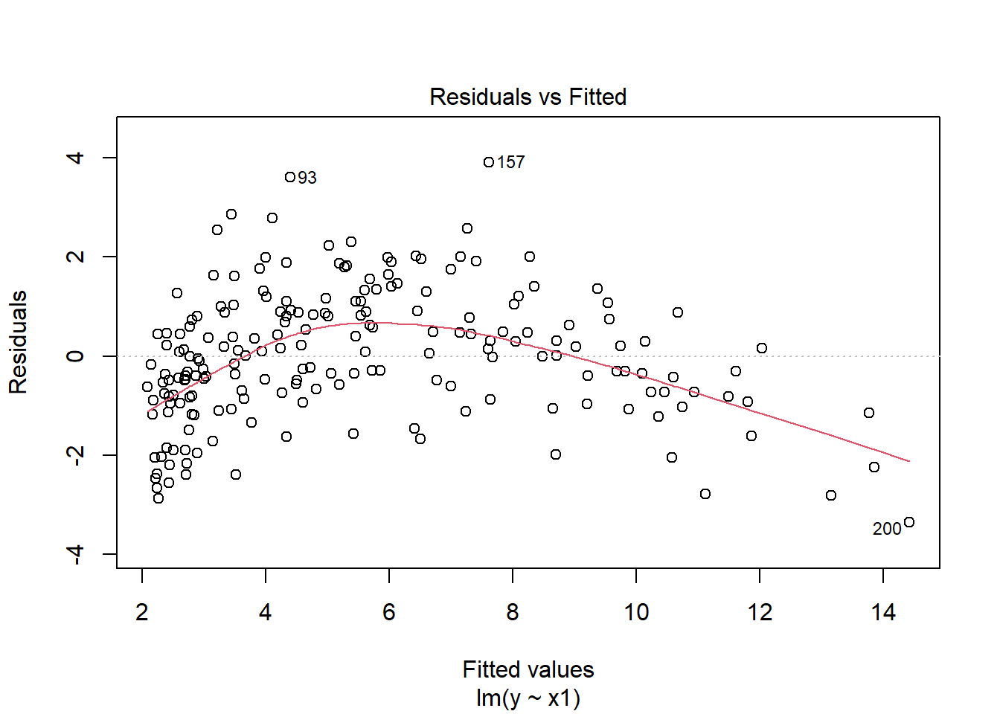
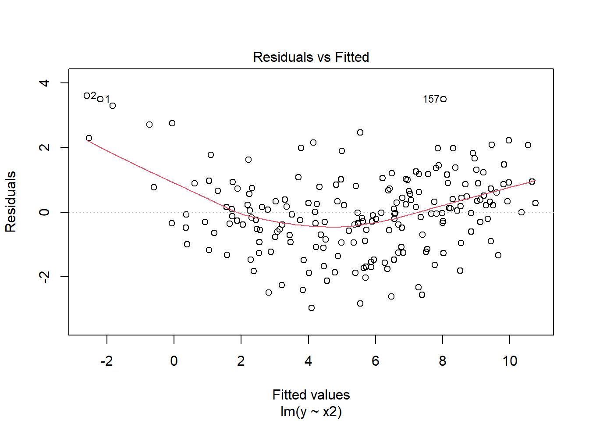
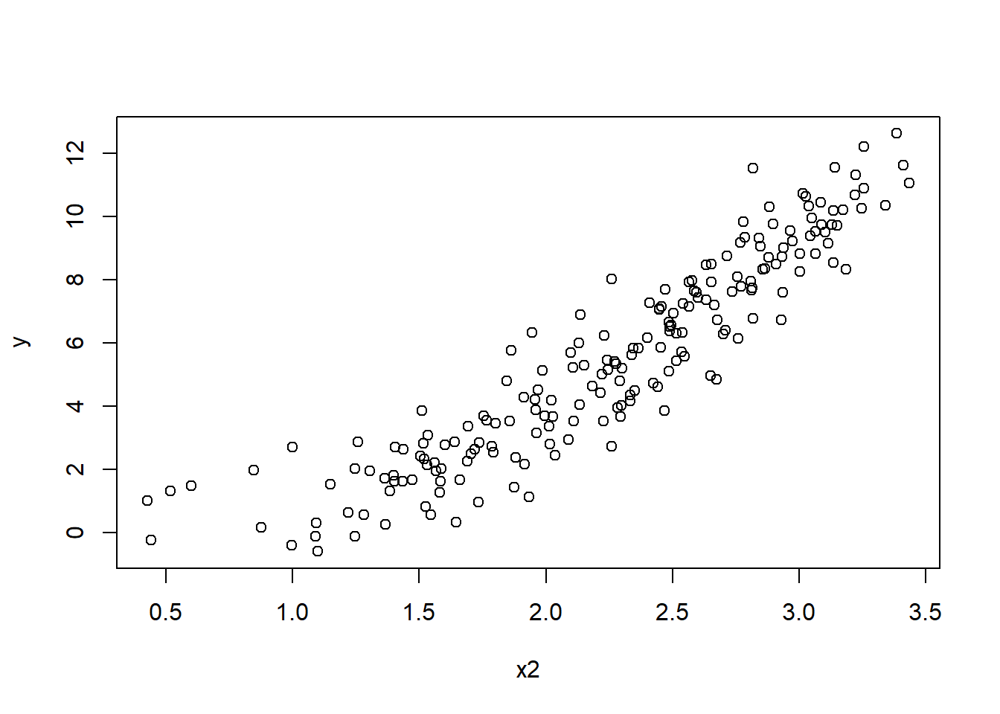

4 Exercise 1: Identify the appropriate transformation
The following simulated data contain different non-linear relationships between response and predictor variables.
Data: SIMDATAXT and SIMDATAST
Columns:
x1 - predictor 1x2 - predictor 2x3 - predictor 3Read in the data using:
QUESTIONS:
- Using the data
SIMDATAXT, apply appropriate transformations to \(x_1\), \(x_2\), and \(x_3\) to linearise the relationships between the response and predictors one at a time.
It might be best if you break it down and address one predictor at the time.
Transform \(x_1\) You can begin by examining the relationship between \(y\) and \(x_1\) at the original scale and in a simple linear model.

 The relationship between \(y\) and \(x_1\) is curved and convex.
Apply the transformation you think is necessary and fit a model. From the figures, the appropriate transformation of \(x_1\) is the .
Transform \(x_2\) The second predictor can be evaluated in the same way as the first. You can begin by examining the relationship between \(y\) and \(x_2\) and the relationship between the two in a simple linear model using scatterplots.

 The relationship seems both curved and concave.
Apply the transformation you think is necessary and fit a model.
From the figures, the appropriate transformation of \(x_2\) is .
Transform \(x_3\) Plot \(y\) and \(x_3\) and the residuals of a simple linear model to assess the relationship between the two.

The relationship seems curved and concave.
Apply the transformation you think is necessary and fit a model.
The figures suggest a transformation for \(x_3\).
- Using the data
SIMDATAST, figure out the appropriate transformation for \(x_1\) and/or \(y\). Follow the usual steps by producing a scatterplot of \(y\) and \(x_1\) and the residuals of the simple linear model at original scale. Consider the possible transformations.
The figures suggest using a transformation for .
- Using the data
SIMDATAST, figure out the appropriate transformation for \(x_2\) and/or \(y\). Follow the steps outlined in (b).
The figures suggest using a transformation for .